Elektrotechnika
Czym jest GNU Octave?
GNU Octave jest środowiskiem programistycznym pozwalającym na tworzenie własnych algorytmów analizy i przetwarzania sygnałów. Oprogramowanie może być również wykorzystane do obliczeń matematycznych i wizualizacji danych.
GNU Octave - Instalacja
Uwaga: Niniejsza instrukcja odnosi się do wersji 3.2.2 programu GNU Octave dla systemów Microsoft Windows, dostępnej na stronie: https://sourceforge.net/projects/octave/
Nowsze wersje programu GNU Octave lub wersje kompatybilne z innymi systemami operacyjnymi można pobrać i zainstalować zgodnie ze wskazówkami znajdującymi się na stronie programu: http://www.gnu.org/software/octave/
Czynności wstępne
Pobierz plik instalacyjny, a następnie uruchom go klikając dwukrotnie na jego ikonie.
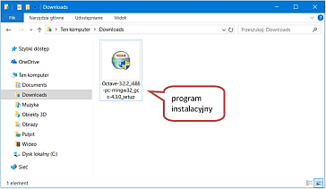
Zostanie uruchomiony kreator instalacji programu GNU Octave. Postępuj zgodnie z jego wskazówkami.
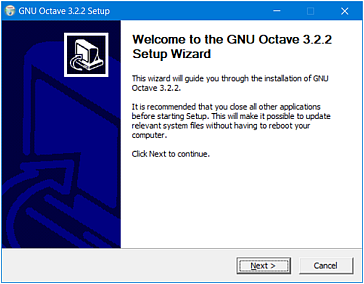
Najpierw zaakceptuj umowę licencyjną.
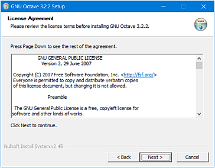
Następnie wybierz folder, w którym program będzie
zainstalowany.
Zaleca się użycie domyślnego folderu,
proponowanego przez instalator:
C:\Octave\3.2.2_gcc-4.3.0.
W przypadku instalacji w folderze innym niż domyślny
unikaj folderów z nazwami zawierającymi spację.
Na przykład, nie należy instalować programu
w folderze Program Files.
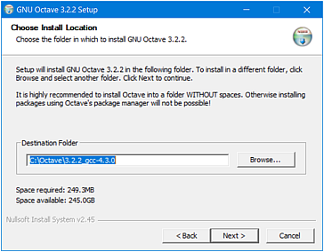
W kolejnym kroku kreator prosi użytkownika o wybór składników
instalacji.
Wybór składników biblioteki ATLAS jest dokonywany
automatycznie przez kreatora instalacji i powinien być zmieniony
wyłącznie w przypadku, gdy kreator błędnie zidentyfikował rodzaj
procesora komputera.
W przykładowej instalacji kreator
automatycznie wybrał składnik SSE3 (Core2Duo).
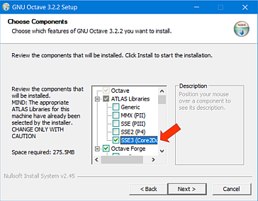
W tym samym oknie kreatora dodatkowo zaznacz składnik Octave Forge. Spowoduje to zainstalowanie zestawu dodatkowych pakietów obliczeniowych, między innymi pakietu do przetwarzania sygnałów.
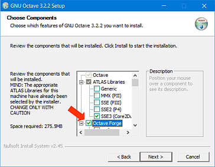
Kolejne okno kreatora dotyczy wskazania miejsc, w których kreator utworzy skróty programu GNU Octave. Zaleca się zaakceptowanie domyślnych ustawień pozostawiając wszystkie wpisy bez zmian.
Następnie klinij przycisk Install, co spowoduje rozpoczęcie procesu instalacji.
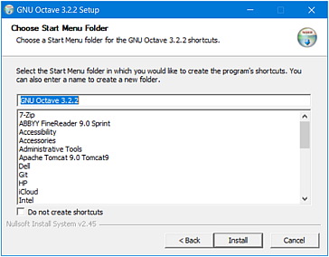
W zależności od wydajności komputera proces instalacji może zająć od kilku do kilkunastu minut.
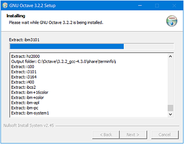
Na zakończenie instalacji zostanie wyświetlone poniższe okno informacyjne.
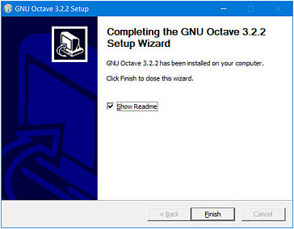
Po naciśnięciu przycisku Finish wyświetli się okno z dodatkowymi informacjami na temat zainstalowanego programu i jego składników.
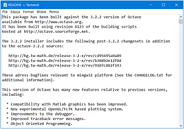
Przy poprawnej instalacji instalator utworzy na pulpicie skrót do programu GNU Octave.
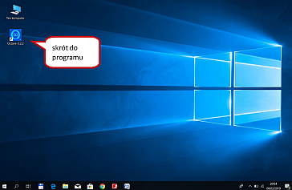
W celu sprawdzenia poprawności instalacji uruchom
program, dwukrotnie klikając myszką na wspomniany wyżej skrót.
Na ekranie komputera powinna się pojawić tzw. konsola
programu, zwana również wierszem poleceń.
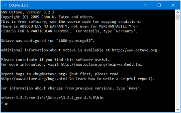
Gratulacje! Program GNU Octave został zainstalowany.
Przejdź do:
Konfiguracja i testowanie programu GNU Octave
Przykłady programów przedstawających przebieg sinusoidalny utworzonych w środowisku GNU Octave
GNU Octave - Konfiguracja i testowanie
Po uruchomieniu programu GNU Octave na ekranie komputera pojawi się konsola (wiersz poleceń).
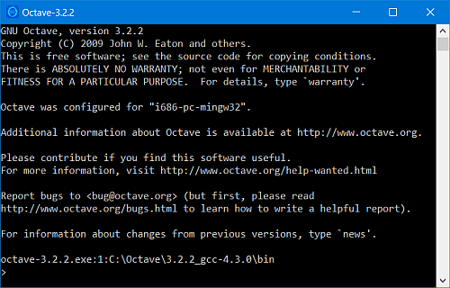
W celu przetestowania działania programu w oknie wiersza poleceń programu Octave po znaku zachęty > wpisz polecenie 3 + 4 i naciśnij klawisz Enter.
Wynik działania powyższej operacji umieszczony zostanie w zmiennej ans (ang. answer - odpowiedź ).
> 3 + 4 ans = 7
Dużą pomocą przy używaniu konsoli jest możliwość skorzystania ze strzałek na klawiaturze ↑ lub ↓, które pozwalają przywoływać poprzednio wykonane polecenia lub przemieszać się pomiędzy nimi.
Aby zakończyć pracę programu GNU Octave w jego konsoli wpisz polecenie:
> quit
lub wciśnij kombinację klawiszy Ctrl + D.
Własny skrypt (program) w Octave
Octave to również język programowania, w którym możesz pisać skrypty (programy), a następnie wywoływać je z poziomu wiersza poleceń.
Skrypty Octave to pliki tekstowe o rozszerzeniu .m, zawierające w kolejnych liniach komendy Octave.
Octave wykonuje wszystkie polecenia zawarte w pliku po kolei.
Jest więc interpreterem - nie ma etapu kompilacji kodu przed jego wykonaniem.
Skrypt (program) uruchamiamy wpisując w wierszu poleceń jego nazwę bez rozszerzenia.
> nazwa_skryptu
Nowo utworzone skrypty (programy) użytkownika należy zapisywać w przeznaczonym do tego celu folderze, zwanym w niniejszej instrukcji folderem roboczym, który należy utworzyć na dysku lokalnym komputera.
Przykładowo, folder roboczy o nazwie Programy można utworzyć jako podkatalog folderu Octave:
C:\Octave\Programy
W systemie Octave należy dodać ścieżkę dostępu do folderu roboczego tak, aby system 'wiedział', gdzie znajdują się pliki ze skryptami (programami) użytkownika.
W celu dodania i zapamiętania ścieżki dostępu do katalogu roboczego, w wierszu poleceń należy kolejno wprowadzić dwa następujące polecenia:
> addpath('C:\Octave\Programy')
oraz
> savepath
Poprawność zapisania ścieżki można sprawdzić wpisując w wierszu poleceń komendę:
> path
co spowoduje wyświetlenie następujących informacji:
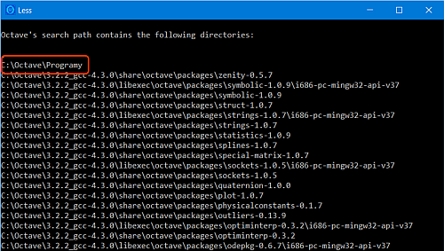
Edycja kodu źródłowego
Do programu GNU Octave 3.2.2 dołączony jest edytor kodu źródłowego Notepad++. W celu uruchomienia tego edytora, w wierszu poleceń należy wpisać komendę:
> edit
i nacisnąć klawisz Enter. Następnie w edytorze tekstu można napisać prosty skrypt (program), np. 2 + 3, jak zilustrowano poniżej.
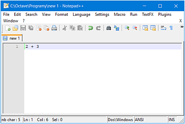
W następnym kroku należy zapisać nowo utworzony skrypt (program) do folderu roboczego
C:\Octave\Programy
Uwaga! Podczas zapisywania skryptu (programu) należy na końcu jego nazwy dodać jako rozszerzenie pliku literę m (dopisać kropkę oraz literę m).
Tak więc powyższy skrypt (program) należy zapisać pod nazwą
pierwszyprogram.m
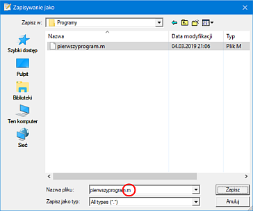
Aby uruchomić wcześniej utworzony skrypt (program), w wierszu poleceń należy wpisać jego nazwę, tym razem pomijając rozszerzenie pliku.
> pierwszyprogram
i nacisnąć klawisz Enter.
Przy prawidłowym zapisaniu pliku i skonfigurowaniu ścieżek dostępu program Octave wyświetli wynik działania programu tak, jak poniżej.
> pierwszyprogram ans = 5
W przeciwnym wypadku zostaną wyświetlone komunikaty o błędach.
W takiej sytuacji należy sprawdzić pisownię nazwy skryptu (programu) i jego rozszerzenia, po czym korzystając z polecenia
> path
należy sprawdzić poprawność ustawienia ścieżki dostępu do katalogu roboczego użytkownika.
Przejdź do:
GNU Octave - Rysowanie przebiegu sinusoidalnego
W celu utworzenia wykresu funkcji sin(x) w danym przedziale np. [-2π, 2π] definiujemy tablicę,
w której przechowywane będą liczby z tego przedziału.
Przykładowo polecenie:
> x = -2*pi : 0.1 : 2*pi;
wypełni tablicę x liczbami od -2π do 2π z krokiem 0.1.
Natomiast komenda:
> y = sin(x);
zapisze w tablicy y wartości funkcji sinus obliczone dla każdej wartości z tablicy x.
Kolejne odpowiadające sobie liczby obu tablic x i y
(pary liczb) posłużą do utworzenia wykresu.
Wykres funkcji rysujemy za pomocą komendy:
> plot(x, y);
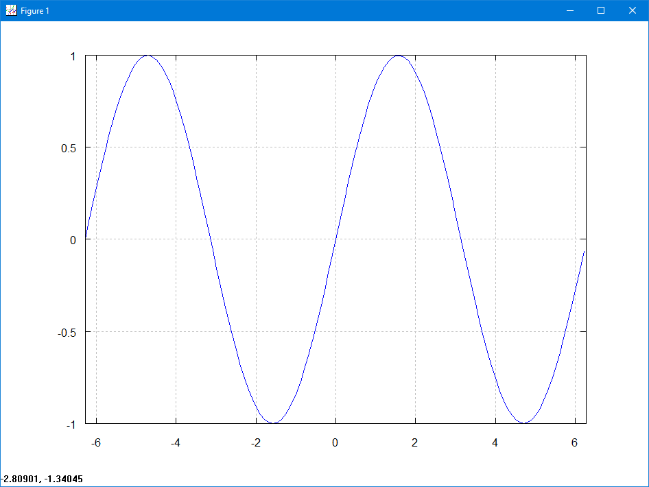
Wykres przebiegu sinusoidalnego
Poniżej przedstawiono przykłady skryptów (programów) rysujących przebieg sinusoidalny.
Fragmenty kodu po znaku # to komentarze.
Nie wpływają one na działanie wykonywanych poleceń. Tekst od
znaku # do końca linii jest ignorowany.
clear all; clf; # czyszczenie danych i okna wykresu
f = 50; # czestotliwosc przebiegu [Hz]
w = 2 * pi * f; # pulsacja przebiegu [rad/s]
A = 10; # amplituda przebiegu [V]
fpn = pi/2; # faza poczatkowa przebiegu [rad]
czasPocz = 0; # czas poczatkowy przebiegu [s]
czasKonc = 0.1; # czas koncowy przebiegu [s]
k = 0.00001; # odstep miedzy kolejnymi wartosciami czasu [s]
t = czasPocz : k : czasKonc; # ciag liczb odpowiadajacych wartosciom czasu
y = A * sin(w * t + fpn); # przebieg sinusoidalny [V]
plot(t, y); # rysowanie wykresu przebiegu
xlabel("Czas [s]"); # opis osi poziomej
ylabel("Amplituda [V]"); # opis osi pionowej
title("Przebieg sinusoidalny") # tytul wykresu
grid on # wlaczenie wyswietlania siatki
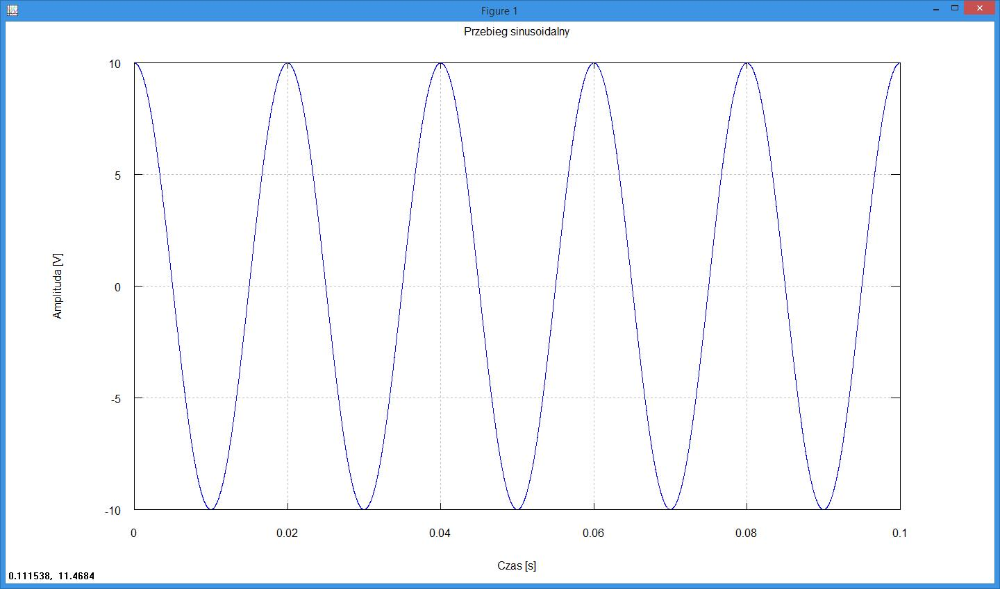
Wykresy dwóch przebiegów sinusoidalnych na jednym rysunku
clear all; clf; # czyszczenie danych i okna wykresu
f = 50; # czestotliwosc przebiegów [Hz]
w = 2 * pi * f; # pulsacja przebiegow [rad/s]
Um = 10; # amplituda napiecia [V]
Im = 7; # amplituda pradu [A]
fpn = pi/2; # faza poczatkowa napiecia [rad]
fpp = -pi/6; # faza poczatkowa pradu [rad]
czasPocz = 0; # czas poczatkowy przebiegu [s]
czasKonc = 0.1; # czas koncowy przebiegu [s]
k = 0.00001; # odstep miedzy kolejnymi wartosciami czasu [s]
t = czasPocz : k : czasKonc; # ciag liczb odpowiadajacych wartosciom czasu [s]
u = Um * sin(w * t + fpn); # przebieg napiecia sinusoidalnego [V]
plot(t, u, "r"); # rysowanie przebiegu napiecia (r - kolor czerwony)
hold on; # wlaczenie trybu dorysowania do biezacego wykresu
i = Im * sin(w * t + fpp); # przebieg pradu sinusoidalnego [A]
plot(t, i, "g"); # rysowanie przebiegu pradu (g - kolor zielony)
xlabel("Czas [s]"); # opis osi poziomej
ylabel("Amplituda"); # opis osi pionowej
grid on # wlaczenie wyswietlenia siatki na wykresie
title('Jan Kowalski - Praca nr 2 - Rysowanie przebiegow sinusoidalnych')
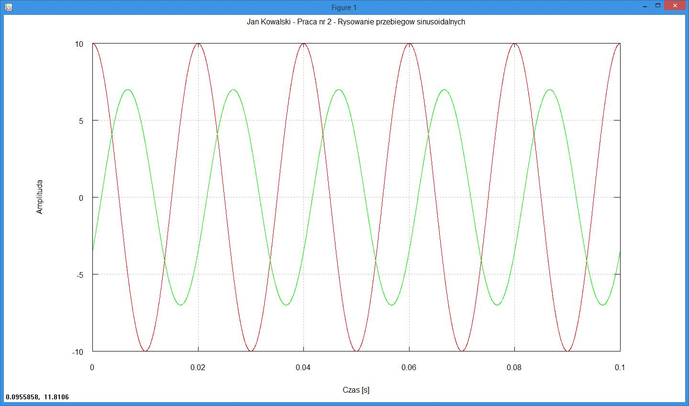
Dwa wykresy w jednym oknie graficznym
clear all; clf; # czyszczenie danych i okna wykresu
f = 50; # czestotliwosc przebiegów [Hz]
w = 2 * pi * f; # pulsacja przebiegow [rad/s]
Um = 80 * sqrt(2); # amplituda napiecia [V]
Im = 1.12; # amplituda pradu [A]
fpn = (-45 / 180) * pi; # faza poczatkowa napiecia [rad]
fpp = (-56.5 / 180) * pi; # faza poczatkowa pradu [rad]
czasPocz = 0; # czas poczatkowy przebiegu [s]
czasKonc = 0.1; # czas koncowy przebiegu [s]
k = 0.00001; # odstep miedzy kolejnymi wartosciami czasu [s]
t = czasPocz : k : czasKonc; # ciag liczb odpowiadajacych wartosciom czasu [s]
u = Um * sin(w * t + fpn); # przebieg napiecia sinusoidalnego [V]
i = Im * sin(w * t + fpp); # przebieg pradu sinusoidalnego [A]
subplot(2,1,1);
plot(t, u, "r"); # rysowanie przebiegu napiecia (r - kolor czerwony)
title('Jan Kowalski - Praca nr 3 - Zadanie nr 5') # tytul rysunku
ylabel("Napiecie [V]"); # opis osi pionowej
grid on # wlaczenie wyswietlenia siatki na wykresie
subplot(2,1,2);
plot(t, i, "g"); # rysowanie przebiegu pradu (g - kolor zielony)
ylabel("Prad [A]"); # opis osi pionowej
xlabel("Czas [s]"); # opis osi poziomej
grid on # wlaczenie wyswietlenia siatki na wykresie
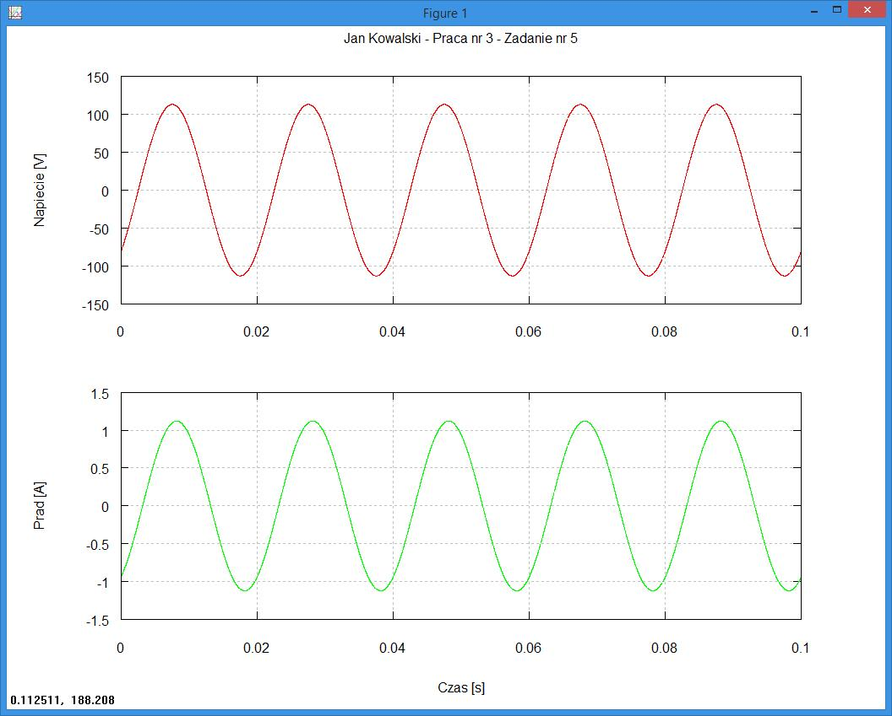
Przejdź do: